Long chains break batch-reweighted metrics.
Sum $T$ per-token terms per chain, normalise across the batch: once $T$ is large, the result is numerically one-hot on a single chain.
A common setup, and four ways to compare the masked model to the clean one.
Common setup
- A clean language model $p$ and a masked language model $q$. $q$ is obtained from $p$ by ablating some attention edges (the "circuit" we're trying to discover). We want to know whether $q$ still behaves like $p$ on a given reasoning problem.
- A fixed prefix: a question plus a partial chain of thought.
- $N$ chains $s_1,\ldots,s_N$ drawn once from $p$ conditioned on the
prefix. Each chain is a full continuation; we extract a final answer
$a_i \in \{1,\ldots,K\}$ from it (parsing the
\boxed{...}), and one answer $A$ is marked "correct". - For each chain we can evaluate its total log-likelihood under either model, as a sum of $T$ per-token log-probs after the prefix:
The goal is to compare $p$ and $q$ at the level of their answer distributions
$$ P^{\star}_c(a) = \sum_s p(s)\,\mathbb{1}[a(s)=a], \qquad P^{\star}_m(a) = \sum_s q(s)\,\mathbb{1}[a(s)=a]. $$We can estimate $P^{\star}_c$ directly from the $N$ chains (they were drawn from $p$). We cannot directly sample from $q$ inside the training loop — it would require regenerating chains after every mask update and would make gradients through the mask intractable — so every metric below estimates $P_m$ by reweighting the chains we already have.
Metric 1 — frequency & importance-sampled answer KL
Clean side. Since chains are drawn from $p$, a plain frequency count is unbiased for $P^{\star}_c$:
$$ \widehat P_c(a) = \frac{1}{N}\sum_i \mathbb{1}[a_i = a]. $$Masked side. We want an expectation under $q$ but only have samples from $p$. Standard fix: multiply each sample by the likelihood ratio $q(s_i)/p(s_i)$, which reweights the $p$-samples into $q$-samples in expectation. This is importance sampling. Two practical problems:
- We only know $q$ up to the same normalisation as $p$ (both are autoregressive over the same vocabulary), so the absolute scale of $q(s_i)/p(s_i)$ is not trustworthy.
- Raw importance sampling has very high variance when a few weights are much larger than the rest.
Both are handled by normalising the weights over the batch (dividing by $\sum_j q(s_j)/p(s_j)$ instead of by $N$). This is "self-normalised" importance sampling:
$$ \widehat P_m(a) = \frac{\sum_{i:\,a_i = a}\, q(s_i)/p(s_i)}{\sum_{j}\, q(s_j)/p(s_j)}. $$As $N \to \infty$, $\widehat P_m \to P^{\star}_m$, and so the KL
$$ \mathrm{KL}\!\left(\widehat P_c \,\big\|\, \widehat P_m\right) \;\longrightarrow\; \mathrm{KL}\!\left(P^{\star}_c \,\big\|\, P^{\star}_m\right) $$asks the natural question: do the two models produce the same answer distribution on fresh draws?
Metric 2 — forking-paths outcome distribution (Bigelow et al.)
Same building blocks, but instead of reweighting each chain by the importance ratio, weight each chain by its likelihood under the model being summarised:
$$ \widehat P^{\,w}_c(a) = \frac{\sum_{i:\,a_i=a} p(s_i)}{\sum_j p(s_j)}, \qquad \widehat P^{\,w}_m(a) = \frac{\sum_{i:\,a_i=a} q(s_i)}{\sum_j q(s_j)}. $$The objective is $\mathrm{KL}(\widehat P^{\,w}_c \,\|\, \widehat P^{\,w}_m)$. This construction is the same as Metric 1 in that both are convex combinations of $\{\mathbb{1}[a_i=a]\}$ over the $N$ chains; the difference is which weights are used — importance ratios in Metric 1, raw model likelihoods in Metric 2.
Metric 3 — reward gap
Reuses Metric 1's $\widehat P_m$, but collapses every non-target answer into a single bucket and takes the gap:
$$ \mathrm{reward\_gap}(M) = \widehat P_m(A) - \max_{a \ne A} \widehat P_m(a) \;\in\; [-1, +1]. $$The learner minimises $-\mathrm{reward\_gap}(M)$.
Metric 4 — local per-token KL
No chain-level weighting at all. Walk along one fixed continuation and average the next-token KL between $p$ and $q$ token by token:
$$ \mathrm{KL}_{\text{local}} = \frac{1}{T}\sum_{t=1}^{T} \mathrm{KL}\!\left(p(\cdot\mid x_{\lt t}) \,\big\|\, q(\cdot\mid x_{\lt t})\right). $$This is a purely local distributional match on one trajectory, with no notion of answer buckets.
Forking paths is biased in the limit, and collapses to a delta on long chains.
It does not estimate $P^{\star}_c$
The chains $s_i$ are drawn from $p$. For any function $f$,
$$ \frac{1}{N}\sum_{i=1}^N f(s_i) \;\longrightarrow\; \mathbb{E}_{s\sim p}[f(s)] = \sum_s p(s)\,f(s). $$Plugging $f(s)=\mathbb{1}[a(s)=a]$ recovers $P^{\star}_c(a)$. But the forking-paths metric weights each chain by an extra factor of $p(s_i)$, so the function being averaged is $f(s)=p(s)\cdot \mathbb{1}[a(s)=a]$, and its expectation under $p$ picks up an extra factor of $p$:
$$ \frac{1}{N}\sum_i p(s_i)\,\mathbb{1}[a_i=a] \;\longrightarrow\; \sum_s p(s)^2\,\mathbb{1}[a(s)=a]. $$Dividing numerator by the analogously-reweighted denominator,
$$ \widehat P^{\,w}_c(a) \;\longrightarrow\; \frac{\sum_s p(s)^2\,\mathbb{1}[a(s)=a]}{\sum_s p(s)^2}, $$which is $p$ renormalised by its squared probabilities. High-probability chains are over-emphasised, low-probability ones under-emphasised. This limit is not $P^{\star}_c$: the forking-paths metric targets the wrong object even with infinite samples.
Finite-sample: it collapses onto a single chain
Far worse than the asymptotic bias, at realistic sample sizes ($N=32$) and chain lengths ($T$ in the thousands) the weighted distribution is numerically a delta on the chain with the largest $\log p$ in the batch.
The reason: the weight on chain $i$ is proportional to $p(s_i) = \exp(\log p(s_i))$, and $\log p(s_i)$ is a sum of $T$ per-token log-probs. Even a per-token difference of $0.1$ nats between two chains compounds into $0.1 \cdot T$ total; at $T=5000$ that is already $500$ nats, so $p(s_{\max})/p(s_{\text{second}}) = \exp(500)$ and the second-largest weight is numerically zero. For all but absurdly short chains the weighted distribution has exactly one non-zero entry — whichever chain happens to be the argmax of $\log p$ in the batch.
What that looks like on real data
Chain log-probs across a batch of $N=32$ continuations from a reasoning model (prefix: a math word problem plus a partial chain of thought). Bars are sorted by log-prob, coloured by the chain's extracted answer:
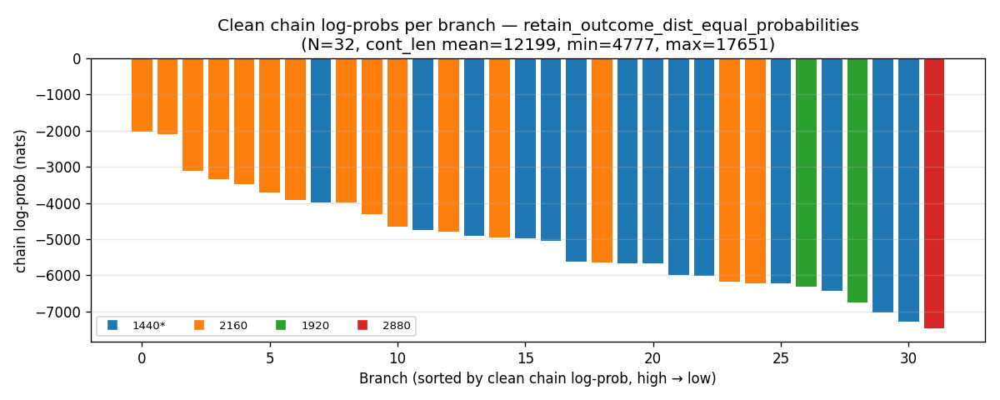
Exponentiating and normalising puts essentially all the weight on bar 0:
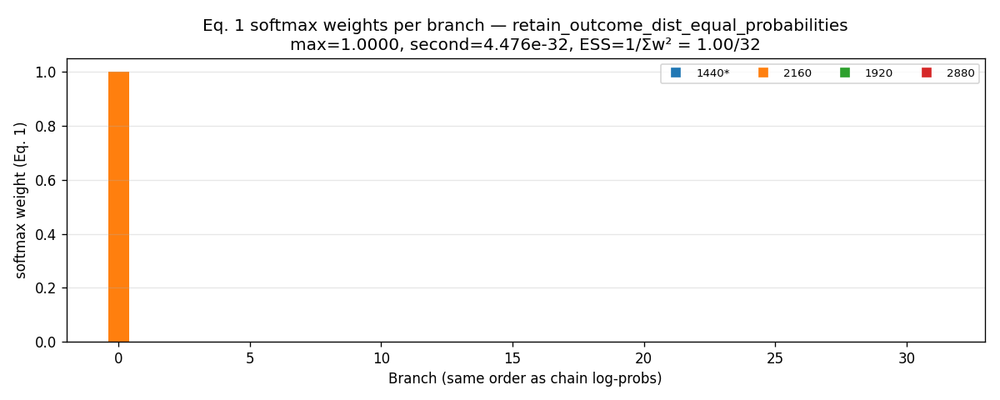
And the answer distributions computed the two ways — plain frequency (left) vs forking-paths weights (right) — disagree completely. The frequency-based estimate shows a near-tie between two answers; the forking-paths version collapses onto whichever answer the single argmax chain happens to have:
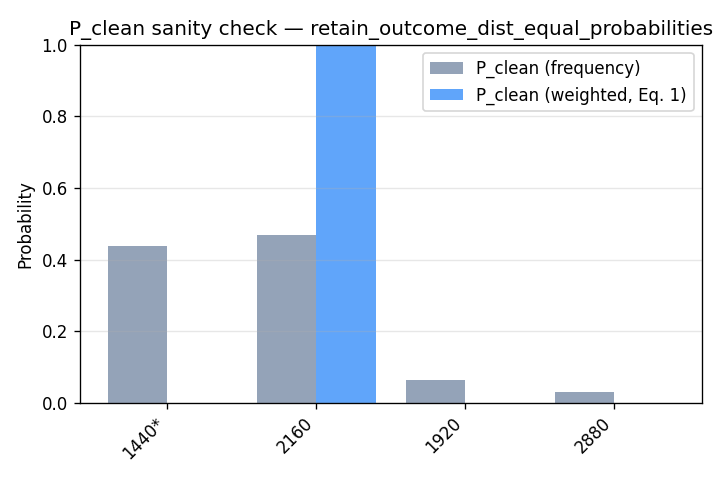
The same collapse on a different model at a different analysis point, with a much smaller per-token spread ($\approx 0.1$ nats/token) — still total:
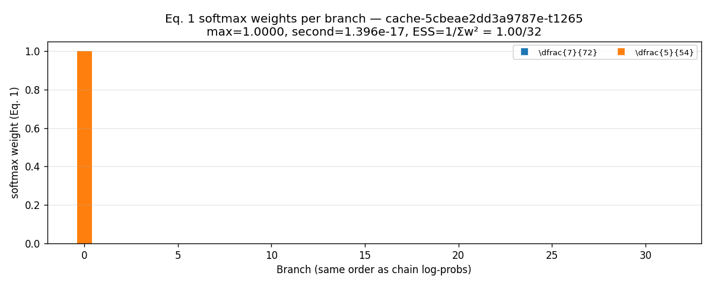
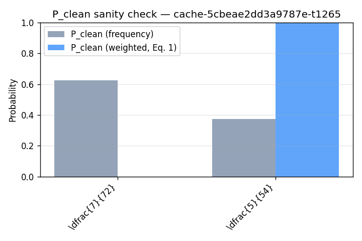
The same pattern held in every configuration we tried (two prefixes on Model A, three analysis points on Model B): the forking-paths weighted distribution always had an effective sample size $\approx 1$ and always collapsed to a single chain, regardless of how spread out the frequency-based answer distribution was.
Consequences
- The KL between two such distributions is the KL between two one-hots: zero when the argmax chain under $p$ and the argmax chain under $q$ have the same answer, $+\infty$ otherwise. It is an indicator variable, not a continuous metric.
- The gradient from all $N-1$ non-argmax chains is exactly zero.
- Which chain wins is a stochastic function of the sampling seed: the objective value depends on which batch of chains was drawn, not on the underlying quantity it was supposed to measure.
Reward gap fails in exactly the same way — and is causally anti-correlated with correctness.
The same softmax collapse, applied to importance ratios
Metric 1 (and therefore Metric 3, which is built on top of it) uses self-normalised importance sampling. Its masked-side weight on chain $i$ is proportional to $q(s_i)/p(s_i) = \exp(\ell_i)$, with
$$ \ell_i = \log q(s_i) - \log p(s_i) = \sum_{t=1}^{T}\bigl[\log q(x_t^{(i)}\mid x_{\lt t}^{(i)}) - \log p(x_t^{(i)}\mid x_{\lt t}^{(i)})\bigr]. $$This is the same kind of object as $\log p(s_i)$ in Tab 2 — a sum of $T$ per-token differences — and it collapses for the same reason. The variance of $\ell_i$ grows linearly in $T$, so the spread between the largest and median $\ell_i$ over the batch grows like $\sqrt T$ or faster. At $T=20{,}000$ even per-token log-ratio differences of order $10^{-3}$ nats push the spread well past $10$ nats, and the normalised weights collapse to one-hot on the argmax chain:
$$ w_{i^{\star}} \to 1,\qquad w_{j\ne i^{\star}}\to 0,\qquad i^{\star} = \arg\max_i \ell_i. $$In that regime $\widehat P_m(a) \approx \mathbb{1}[a = a_{i^{\star}}]$ and
$$ \mathrm{reward\_gap}(M) \approx \begin{cases}+1 & a_{i^{\star}} = A,\\ -1 & \text{otherwise.}\end{cases} $$Empirically this happens on every mask we tried. The normalised weights over the 32 chains, as a function of sparsity (one subplot per sparsity, bars coloured by the chain's answer — green = correct):
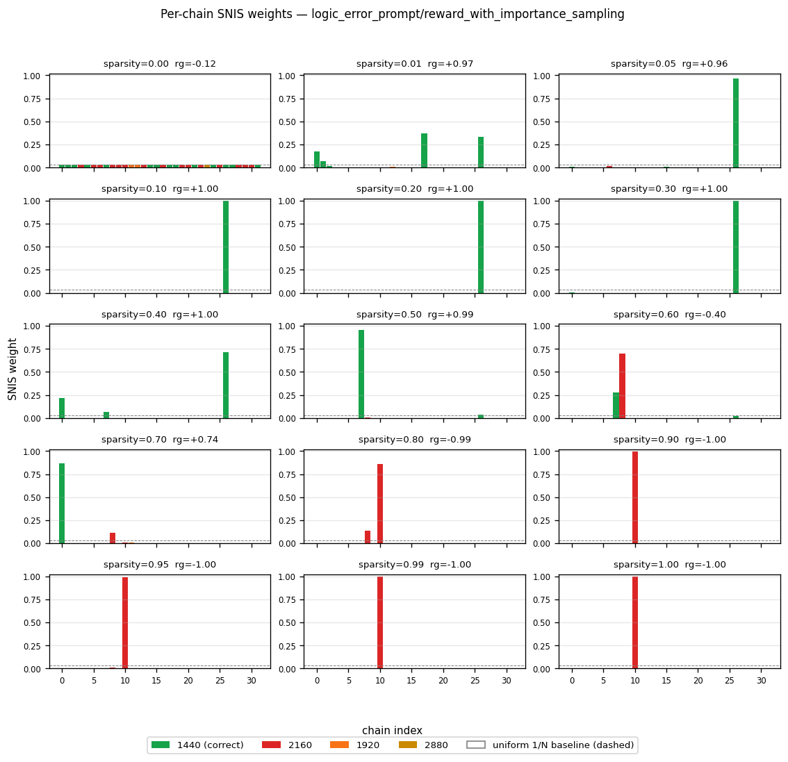
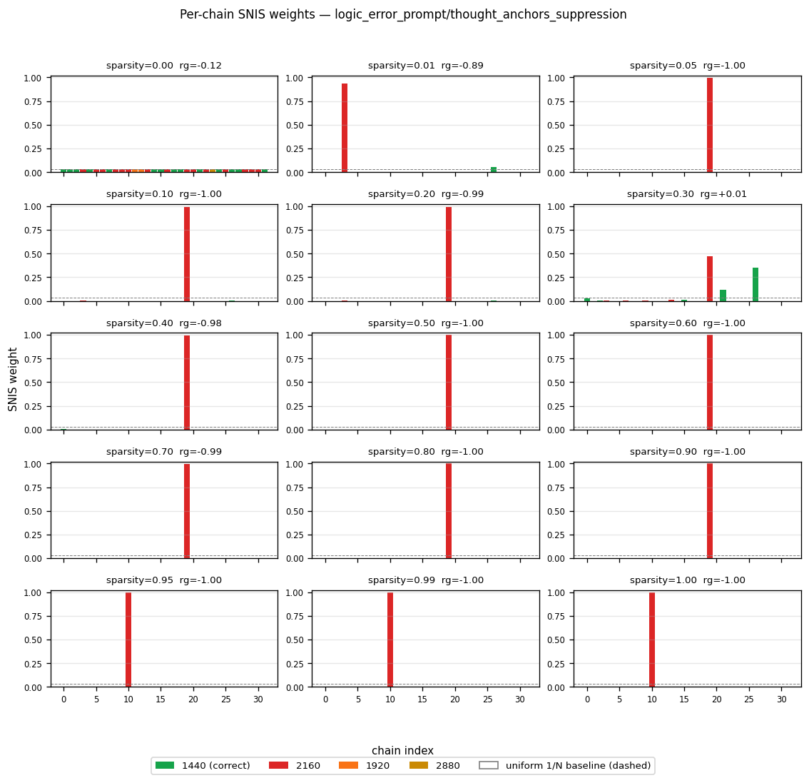
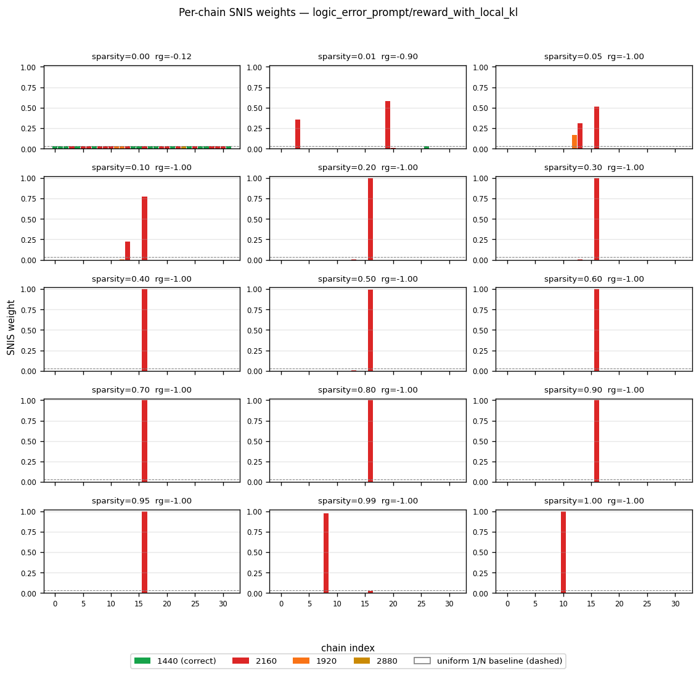
At sparsity $0$ every bar sits at the uniform baseline $1/N = 1/32$, as it must. At every higher sparsity all three masks put essentially all the weight on one chain.
What the optimiser actually has to do
Given the collapse, maximising reward gap reduces to: find a mask $M$ and one pre-committed chain $i^{\star}$ in the correct-answer bucket such that $\ell_{i^{\star}} > \ell_j$ for all $j\ne i^{\star}$. Writing out the definition and rearranging,
$$ \underbrace{\log q(s_{i^{\star}}) - \log q(s_j)}_{\text{depends on mask}} \;>\; \underbrace{\log p(s_{i^{\star}}) - \log p(s_j)}_{\text{fixed constant}}, \qquad \forall\, j \ne i^{\star}. $$The right-hand side is $N-1$ fixed numbers. The optimiser just has to deform the left-hand side — suppress attention edges that other chains $j$ rely on while leaving the edges chain $i^{\star}$ relies on intact — so that one pre-committed token sequence stays high-probability under $q$ while $31$ others lose probability. This is a "single-chain capture" objective: it has nothing to do with whether $q$ is a good language model, and nothing to do with whether $q$ is more likely to output the correct answer on fresh draws.
Causal test: sample directly from the masked model
The decisive check is to stop reweighting chains we already have, and actually sample from $q$. Install each mask at the sparsity where the reward-gap mask reads $+1.0$ (sparsity $0.10$), draw $32$ fresh chains at the training temperature, and count correct answers:
| mask | reward gap metric value | fraction of fresh samples that are correct |
|---|---|---|
| unmasked baseline | $-0.125$ | $7/32 = 0.219$ |
| mask trained on reward gap | $+1.00$ | $4/32 = 0.125$ |
| thought anchors (forward suppression) | $\approx -1.00$ | $9/32 = 0.281$ |
The ordering is inverted. The mask that scored $+1.0$ on the reward-gap objective generates correct answers less often than the unmasked baseline; the mask that scored $\approx -1.0$ generates them more often. Optimising the metric has not just decoupled from the quantity it was supposed to proxy — it is anti-correlated with it.
Semantic audit — no human-readable structure in the top-scoring edges
As a separate check, we asked a language-model judge, given the full chain of thought, to rate each sentence (and each sentence-pair) in the prefix for how much it pushes the reasoning toward the correct answer vs toward the distractor answers, on a $[-2,+2]$ scale. If the learned mask had captured semantically meaningful structure, its importance scores on sentences/pairs should correlate with the judge's ratings.
Single-sentence view for each of the three masks. Each dot is one sentence; $x$ is the mask's importance score for that sentence, $y$ is the judge's bias score. None of the three masks shows a significant positive correlation:
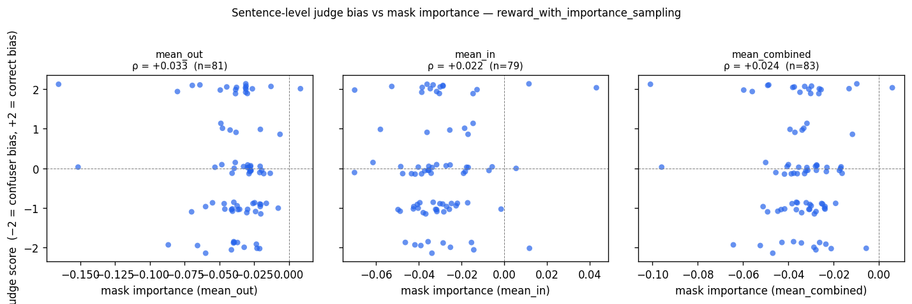
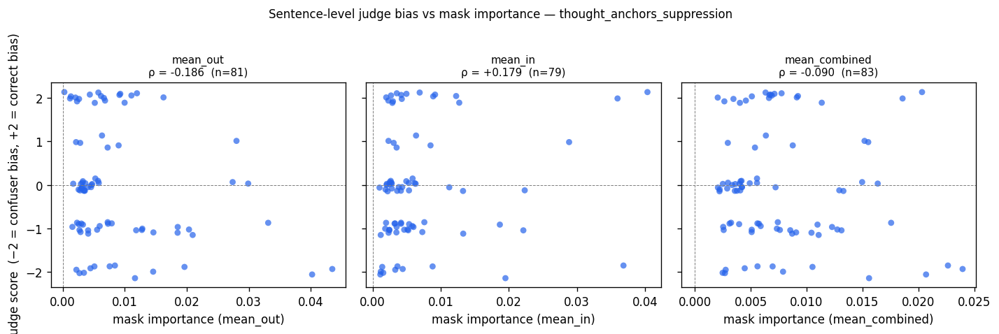
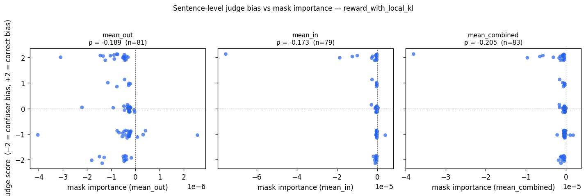
Pair view (top-50 vs bottom-50 pairs by mask score) tells the same story. The reward-gap mask is flat; the thought-anchors mask is weakly reversed; the local-KL mask is significantly reversed (its "most important" edges are the ones the judge rates as most pushing the reasoning toward the wrong answers):
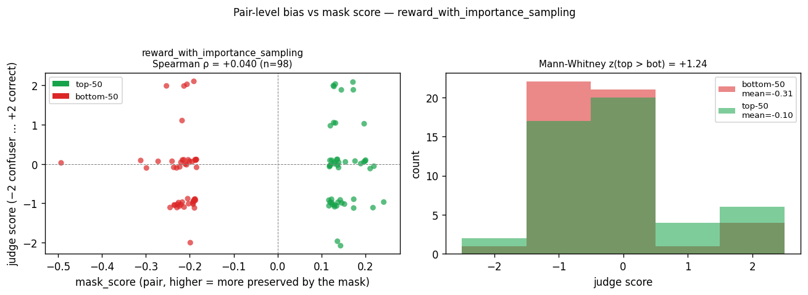
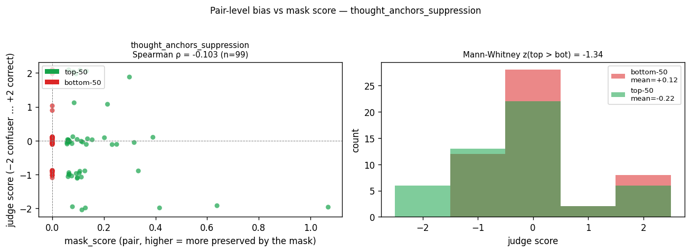
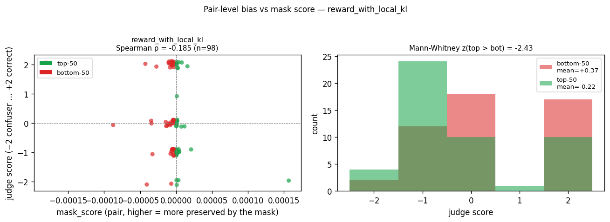
The shared underlying failure
Tabs 2 and 3 are the same bug. Both the forking-paths outcome distribution and the reward gap under self-normalised importance sampling take a batch of length-$T$ chains, compute one number per chain as a sum of $T$ per-token quantities, and then normalise those numbers into a probability distribution over the batch. As soon as $T$ is large enough that the spread of the per-chain sums exceeds a few tens of nats — which happens at $T$ in the hundreds, never mind the thousands we actually use — the normalised distribution is numerically a one-hot on the argmax chain, and any objective built on top of it degenerates into "did the argmax chain happen to be in the target answer bucket?".